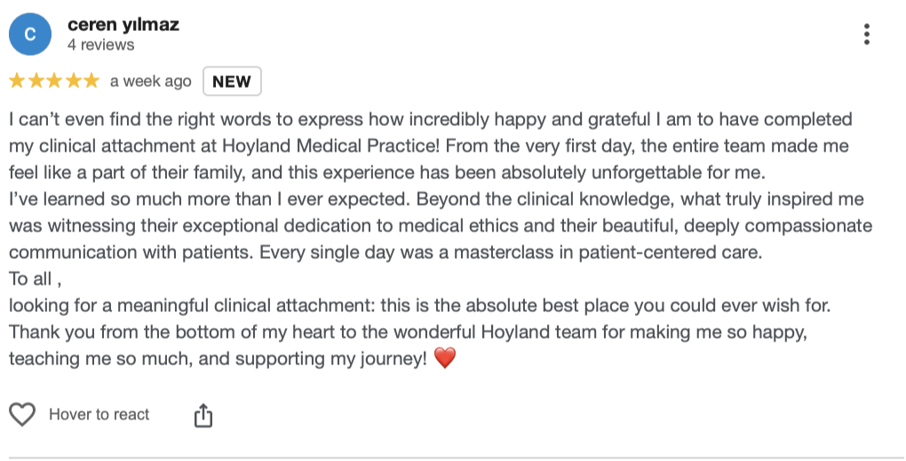
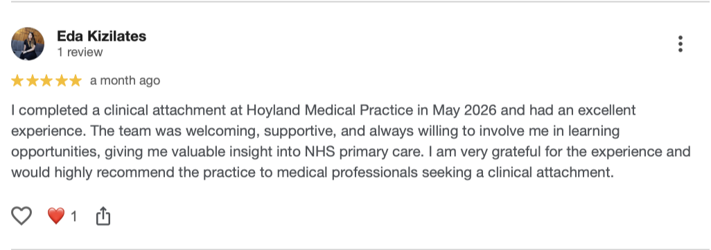
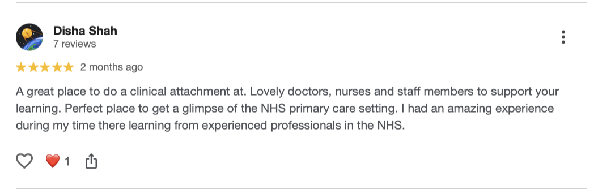
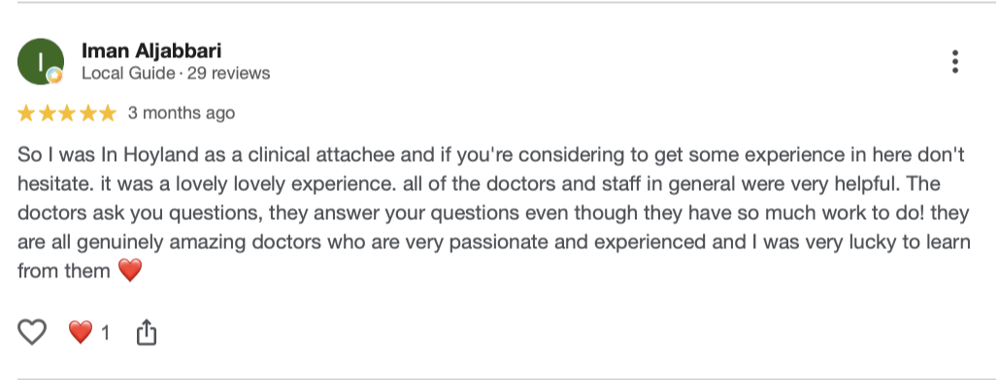

NHS GP (Family Medicine) Clinical Attachment Programme for IMGs
A structured 4-week NHS primary care observership in South Yorkshire, designed for IMGs seeking first-hand exposure to UK general practice, NHS systems, clinical communication, documentation and career development.
Overview
A structured, supervised NHS primary care observership
Hoyland Medical Practice offers a Clinical Attachment Programme for International Medical Graduates seeking first-hand exposure to the UK healthcare system in an NHS GP practice and family medicine setting.
The programme is designed as a structured, supervised NHS primary care observership with selected supervised learning opportunities where appropriate. Participants are supported by GP partners (Family Medicine Consultant), educators and members of the wider primary care team while building familiarity with NHS consultation models, communication, documentation, referrals, governance and multidisciplinary working.
Programme Structure
What the 4-week observership includes
- Induction and orientation to NHS primary care systems, professional standards and practice policies.
- Observation of GP (Family Medicine Consultant), nurse and wider multidisciplinary team clinics, subject to patient consent and supervision.
- Structured case discussions and debriefs following observed consultations.
- Teaching on UK consultation models, clinical communication, ethics and safeguarding.
- Learning about documentation, referral pathways, prescribing systems and NHS workflows.
- Selected supervised learning opportunities where appropriate, in line with governance and patient safety requirements.
- Creation of a personalised learning plan targeting individual areas for development.
- Completion of a quality improvement project or clinical audit, with opportunity to present at local meeting.
- Opportunities to observe home visits, nursing home ward rounds, minor surgery sessions or joint injections where suitable.
- Regular feedback to support confidence, communication and readiness for NHS clinical environments.
Optional Add-On
PLAB 2 Preparation Sessions with Experienced PLAB 2 Examiner
Enhance your clinical attachment with optional PLAB 2 preparation sessions. These are intensive, focused and interactive teaching sessions designed to help candidates build confidence and maximise their chances of success.
Each 90-minute session includes:
- One-to-one teaching with an experienced former PLAB 2 examiner
- Practice with realistic PLAB 2 scenarios
- Tips and strategies for exam success
- Individualised marking aligned with PLAB 2 standards
- Personalised feedback tailored to your strengths and areas for improvement
Cost: £50 per 90-minute session
This optional add-on provides focused, expert guidance to support your PLAB 2 preparation alongside your clinical attachment experience. Candidates should indicate their interest in their application, as sessions are subject to availability.
Additional Features
Professional development support during the attachment
- Targeted support with clinical communication and NHS consultation style.
- Career guidance including GP training insights, CV building and interview preparation.
- Opportunities to attend suitable teaching sessions with GP registrars and trainers.
- Assigned clinical audit or quality improvement project with potential opportunity to present at the end of the attachment.
- Accommodation signposting and local orientation support if required.
Governance
Governance, Safety and Professional Standards
Candidates attend as clinical observers and are not employed by the practice. They must not make independent clinical decisions, provide unsupervised clinical advice, prescribe, request investigations, or document in patient records unless explicitly authorised and supervised.
All patient contact is subject to appropriate supervision, patient consent, confidentiality, information governance, safeguarding and infection control policies.
Completion of the attachment does not guarantee employment, visa sponsorship, GMC registration, PLAB success, or a reference. References are discretionary and depend on attendance, professionalism and performance during the programme.
Who Should Apply?
Who the programme is suitable for
This programme may be suitable for:
- International Medical Graduates seeking UK primary care exposure
- Doctors preparing for NHS work
- Doctors interested in general practice or family medicine
- Candidates who want to understand NHS systems, communication, referrals, documentation and MDT working
This programme may not be suitable for candidates seeking:
- Hospital ward-based attachments
- Guaranteed employment
- Visa sponsorship
- Guaranteed references
- Independent clinical practice
- Guaranteed PLAB/GMC outcome
Documents Required
Documents usually requested before a confirmed placement
Once your application is reviewed, shortlisted candidates will be asked to provide the following documents:
- Passport
- Visa or evidence of right to visit the UK, if applicable
- Proof of medical qualification and professional registration, with translation if required
- DBS, CRB or overseas police clearance certificate, with translation if required
- An up-to-date CV
- GMC registration status, if applicable
- A brief summary of your learning aims from the programme
Hoyland Medical Practice is unable to provide visa sponsorship or visa sponsorship letters.
Choose Your Cohort
2027 Cohort Availability
We offer a structured 4-week programme. Applications are open for all 2027 cohorts listed below:
| Cohort Name | Dates | Available Spaces |
|---|---|---|
| Alpha | 4 Jan 2027 - 29 Jan 2027 | Available |
| Beta | 1 Feb 2027 - 26 Feb 2027 | Available |
| Gamma | 1 Mar 2027 - 26 Mar 2027 | Available |
| Delta | 5 Apr 2027 - 30 Apr 2027 | Available |
| Epsilon | 3 May 2027 - 28 May 2027 | Available |
| Zeta | 1 Jun 2027 - 24 Jun 2027 | Available |
| Eta | 1 Jul 2027 - 29 Jul 2027 | Available |
| Theta | 2 Aug 2027 - 27 Aug 2027 | Available |
| Iota | 1 Sep 2027 - 28 Sep 2027 | Available |
| Kappa | 4 Oct 2027 - 29 Oct 2027 | Available |
| Lambda | 1 Nov 2027 - 26 Nov 2027 | Available |
| Mu | 1 Dec 2027 - 28 Dec 2027 | Available |
Programme Fee
Programme Fee
The programme fee is £700.
This includes:
- A structured 4-week NHS primary care observership
- Induction and orientation
- Supervised exposure to general practice clinics and NHS systems
- Case discussions and learning opportunities
- Portfolio, audit or quality improvement exposure where available
- Feedback and certificate of attendance
Payment: A £100 deposit is required to secure your allocated cohort once accepted. The remaining £600 balance must be paid before or on the first day of the attachment.
Fees are non-refundable once a place has been confirmed. Candidates who are unable to attend may transfer to another available cohort within 12 months, subject to availability.
Cancellations
Cancellations
If you are unable to attend your allocated cohort or wish to withdraw your application, please notify us by emailing syicb-barnsley.hoyland@nhs.net.
Please note: any fees paid are non-refundable, but candidates can transfer to another available cohort within the next 12 months, subject to availability.
Application Process
How to Apply for 2027 Cohorts
- Select & Apply: Complete the online application form below selecting your preferred 2027 cohort.
- Application Review: The practice team will review your application details.
- Submit Documents: Shortlisted candidates will be invited to submit their documents for verification.
- Secure Placement: Once accepted, a £100 deposit secures your placement in the chosen cohort.
- Induction & Start: Induction materials, timetable and details will be shared prior to your start date.
Online Application Form
Apply for 2027 Clinical Attachment
Please complete the form below to apply for your preferred 2027 cohort. All applications are reviewed by the practice team.
Former Candidate Reviews
How former candidates found the programme
Feedback shared by doctors who completed a clinical attachment at Hoyland Medical Practice.



